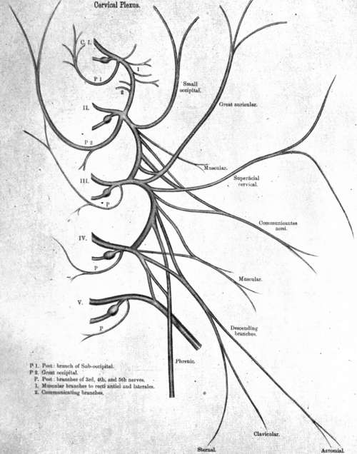

Brachial Plexus
Description
This section is from the book "Nerves Of The Human Body", by Charles R. Whittaker. Also available from Amazon: Hughes Nerves Of The Human Body.
Brachial Plexus
The brachial plexus occupies the lower part of the posterior triangle of the neck and the upper part of the axilla. It is formed by the anterior primary divisions of the lower four cervical nerves together with a considerable portion of the first thoracic, and is usually augmented by a communicating twig from the fourth cervical. The nerves appear between the scalenus anticus and scalenus medius muscles.
In the neck the plexus is in intimate relation to the third part of the subclavian artery, being superior and posterior to that vessel. It is crossed superficially by the posterior belly of the omo-hyoid, likewise by the transverse cervical and suprascapular arteries. The plexus passes behind the clavicle to reach the axilla, the lower trunk grooving the upper surface of the first rib. Here it becomes enclosed within the axillary sheath, lying laterally to the axillary artery. The junction of the fifth and sixth cervical nerves produces an upper trunk, the seventh, remaining separate, becomes the middle trunk, while a lower trunk is formed by the union of the eighth cervical and first thoracic nerves. Each of the three trunks divides into an anterior and posterior branch. The anterior branches of the upper and middle trunks unite as the lateral cord, the anterior branch of the lower trunk is continued as the medial cord, and the posterior divisions of the trunks join together as the posterior cord.
Branches
The branches consist of two sets (a) those given off in the posterior triangle, supra-clavicular, and (b) those arising in the axilla, infraclavicular.
Supra-Clavicular Branches
(a) Arising from front of plexus-
(1) Nerves to longus colli and scalenus anticus (C. 5, 6,7, 8)
(2) Communicating twigs to phrenic (C. 5).
(3) Nerve to subclavius (C. 5, 6). This nerve forms an anterior relation of the third part of the subclavian artery.
(b) Arising from back of plexus-(1) Nerves to scalenus medius and posticus (C. 5, 6, 7, 8).
(2) Nerve to rhomboids or dorsal scapular (C. 5), pierces the scalenus medius, and runs downwards under cover of the levator anguli scapulae to supply that muscle, together with the rhomboideus major and minor.
(3) Long thoracic or nerve of Bell (C. 5, 6, 7), perforates the scalenus medius as two trunks. The nerve supplies the serratus magnus (anterior).
(4) Supra scapular (C. 5, 6) passes beneath the trapezius, and reaches the dorsum of the scapula through the suprascapular notch. It innervates the supraspinatus and infraspinatus, and furnishes an articular twig to the shoulder joint.
Infra-Clavicular Branches
(a) From the lateral cord. Lateral anterior thoracic, musculocutaneous, and lateral head of median nerve.
(b) From the medial cord. Medial anterior thoracic, lesser internal cutaneous (medial cutaneous of arm), internal cutaneous (medial cutaneous of forearm), ulnar, and medial head of median.
(c) From the posterior cord. Three subscapulars, circumflex (axillary), and musculo-spiral (radial).
Branches Of Lateral Cord
(1) Lateral anterior thoracic (C 5, 6, 7). This nerve pierces the costo-coracoid membrane to supply the pectoralis major. It communicates with the medial anterior thoracic.
(2) Musculo-cutaneous (C 5, 6). The musculo-cutaneous lies on the lateral side of the third part of the axillary artery. After passing through the coraco-brachialis, the nerve descends obliquely between the biceps and brachialis anticus, to appear at the elbow on the lateral edge of the biceps tendon. Here it perforates the deep fascia, and after forming a posterior relation of the median-basilic vein, divides into anterior and posterior branches. In its course through the arm it supplies the coraco-brachialis, biceps, and brachialis anticus; a small twig is also furnished to the humerus. The terminal branches innervate the skin on the front and back of the forearm near the radial border, extending as far as the wrist and root of the thumb. The musculo-cutaneous gives off articular branches to the elbow and wrist joints; it also communicates with the radial in the lower part of the forearm, and with the inferior lateral cutaneous branch of the musculo-spiral.
Branches Of Medial Cord
(1) Medial anterior thoracic (C. 8, T. 1), supplies both the pectoralis major and minor; it communicates with the lateral anterior thoracic.
(2) Lesser internal cutaneous (T. 1), lies between the third part of the axillary artery and vein, then crosses either in front of or behind the vein, to be distributed to the skin of the lower half of the arm on its medial and posterior aspects. It is joined by the intercosto-humeral nerve (the lateral cutaneous branch of the second thoracic).
(3) Internal cutaneous (C. 8, T. 1), after forming an anterior relation of the third part of the axillary artery, passes downwards on the medial side of the brachial to become cutaneous in the lower third of the arm. In the vicinity of the elbow it divides into anterior and posterior branches. The nerve supplies the skin on the anterior and posterior surfaces of the forearm near the ulnar border; it communicates with the ulnar nerve in the lower part of the forearm.
(4) Ulnar (C. 8, T. 1). In the axilla the ulnar nerve intervenes between the third part of the axillary artery and the axillary vein. From this position it passes downwards on the medial side of the brachial, to pierce the medial intermuscular septum opposite the insertion of the coraco-brachialis, along with the inferior profunda (superior ulnar collateral) artery. It reaches the interval between the medial epicondyle and the olecranon process, and enters the forearm between the two heads of the flexor carpi ulnaris. Here it follows a straight course as far as the wrist, lying beneath the flexor carpi ulnaris, supported by the flexor profundus digitorum, and forming an intimate medial relation of the ulnar artery in its lower two-thirds. Together with the ulnar artery it enters the hand by passing over the anterior annular (transverse carpal) ligament, lying between the artery and the pisiform bone. In the palm the nerve divides into two terminal branches, superficial and deep.
Branches
(a) Articular to the elbow joint.
(b) Muscular, to the flexor carpi ularis and medial half of flexor profundus digitorum.
(c) Palmar cutaneous, given off about two inches above the wrist, accompanies the ulnar artery, and supplies the skin of the palm and hypothenar eminence.
(d) Dorsal cutaneous, arises in the middle third of the forearm, and reaches the back of the hand by passing beneath the tendon of the flexor carpi ulnaris about two or three inches above the wrist. It innervates the skin of the medial side of the little finger, and the adjacent sides of the little and ring fingers on their dorsal surfaces. Over the back of the hand the nerve communicates with the superficial branch of the radial.
(e) Terminal branches. The superficial branch supplies the palmaris brevis, and furnishes two digital nerves, one to the medial aspect of the little finger, and the other to the contiguous sides of the little and ring fingers on their palmar surfaces. This latter communicates with a digital branch of the median. The deep part accompanies the profunda branch of the ulnar artery between the abductor and flexor brevis minimi digiti, and to the medial side of and below the hook of the unciform. It crosses the palm from the medial to the lateral side, lying in the concavity of the deep palmar arch, and supplies the abductor, opponens, and flexor brevis minimi digiti; the two medial lumbricales; the interossei; the oblique and transverse adductors of the thumb; and the deep head of the flexor brevis pollicis.
Plate VII. Branches Of Posterior Cord
(1) Three subscapular nerves. The short or upper (C. 5, 6) supplies the subscapulars; the long or middle (C. 6, 7, 8) innervates the latissimus dorsi, while the lower subscapular (C. 5, 6) is distributed to the subscapularis and teres major.
(2) Circumflex (axillary) (C. 5, 6). For a short distance the nerve forms a posterior relation of the third part of the axillary artery, but on reaching the lower border of the subscapularis, it passes backwards through the quadrilateral space in company with the posterior circumflex artery. After giving off an articular twig to the shoulder-joint, the circumflex divides into an anterior and a posterior division. The former supplies the anterior part of the deltoid, and also the skin over its middle third; the latter innervates the posterior part of the deltoid, the teres minor, and sends a cutaneous filament to the skin over the lower third of the deltoid. The branch to the teres minor presents a pseudo-ganglion.
(3) Musculo-spiral, (C. 5, 6, 7, 8, T. 1). This is the largest branch Of the brachial plexus. At first it lies behind the first part of the axillary artery, resting upon the subscapularis, latissimus dorsi, and teres major. It then passes behind the brachial, and accompanies the superior profunda artery downwards and backwards between the long and medial heads of the triceps, to enter the musculo-spiral groove. In this groove it winds round the back of the humerus between the lateral and medial heads of the triceps. Having pierced the lateral intermuscular septum, it descends in the sulcus between the supinator longus (brachio-radialis) and brachialis anticus, to a point just above the lateral epicondyle, where it divides into the radial and the posterior interosseous.
Branches
Besides the terminal ones, three sets are given off from the musculo-spiral--axillary, in the musculo-spiral groove, and after leaving the groove. The axillary branches are :-
(a) Muscular, to long and medial heads of triceps; one of the latter accompanies the ulnar nerve and is therefore called the ulnar collateral nerve.
(b) Internal cutaneous, distributed to the skin of the back of the arm as far as the elbow. (Plate XI.).
In the musculo-spiral groove the branches are :-
(c) Muscular, to lateral and medial heads of triceps, and to the anconaeus.
(d) Lateral cutaneous, two in number, an upper and a lower.
The upper supplies the integument of the lateral and front aspects of the arm in its lower half, while the lower is distributed to the skin on the posterior aspect of the lateral side of the forearm (Plate XI). After leaving the musculo-spiral groove, cutaneous, articular, and muscular branches are given off.
(e) Articular, to the elbow joint.
(f) Muscular, to the supinator longus (brachio-radialis), extensor carpi radialis longior, and brachialis anticus.
(g) Radial. The radial, which is entirely a cutaneous nerve, is continued downwards beneath the supinator longus (brachio-radialis), and is in close contact about the middle of its course with the lateral side of the radial artery. In the lower part of the forearm it passes backwards beneath the supinator longus tendon, becomes cutaneous, and divides into a lateral and a medial portion. The lateral extends to the radial side of the thumb, communicates with a branch of the musculocutaneous, and furnishes filaments to the thenar eminence. The medial portion, after communicating with the posterior branch of the musculo-cutaneous, gives off a twig to join the dorsal branch of the ulnar. It subsequently divides into four branches; the first supplies the ulnar side of the thumb; the second, the radial aspect of the index finger; the third, the contiguous sides of the index and middle fingers, while the fourth is distributed to the adjacent sides of the middle and ring fingers. The first extends as far as the nail of the thumb, but the remaining branches generally terminate over the first interphalangeal joints of the fingers. (h) Posterior interosseous. This nerve winds round the upper end of the radius, and pierces the supinator brevis (supinator) to reach the back of the limb. For some distance it lies between the superficial and deep layer of muscles, but a little below the middle of the forearm it dips beneath the long extensor of the thumb to reach the interosseous membrane. On this it is continued as far as the dorsum of the wrist, where it terminates in a gangliform enlargement, from which filaments are distributed to the carpal articulations. Before the nerve passes to the back of the forearm, it supplies the extensor carpi radial is brevior and the supinator brevis. On the back of the forearm it innervates the extensor communis digitorum, extensor minimi digiti, extensor Carpi ulnaris, extensor indicis, and the three extensors of the thumb.
Continue to:
- prev: Anterior Primary Divisions Of Spinal Nerves
- Table of Contents
- next: From Lateral And Medial Cords. Median Nerve